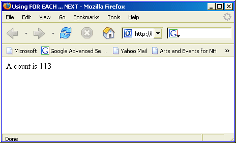

Running a Statement Multiple Times with a Loop
Many times you will want to execute the same line of code multiple times. Frequently, you will not know in advance how many times this will need to be. Looking at the following code sample, you can see that it uses a FOR ... NEXT loop, which solves this problem for a phrase that could contain any number of words.
Using a FOR ... NEXT Loop
A FOR ... NEXT loop uses a counter variable (in this case it is "nCounter"). The loop starts by setting nCounter equal to 1. It runs until nCounter is greater than WordCount, then the Application Server runs the first line of code after the NEXT statement.
Create a new A5W page with the following content.
<html> <head> <meta name="generator" content="Alpha Five HTML Editor"> <title>Using a FOR ... NEXT Loop</title> </head> <body> <%a5 dim cPhrase as C dim nWordCount as N dim nCounter as N Phrase = "Four score and seven years ago" nWordCount = w_count(Phrase) for nCounter = 1 to nWordCount ? "Word " + nCounter + " is " + word(cPhrase, nCounter, " ") + "<br>" next nCounter %> </body> </html> |
Note in this example.
Click File > Save As to save your page as ""Using FOR NEXT.
Click
 to run the page in Live Preview. The results should look like this:
to run the page in Live Preview. The results should look like this:
Using the STEP Argument in a FOR ... NEXT Loop
The normal FOR ... NEXT loop increments its counter by 1 on each pass. The STEP argument allows you to increment or decrement the counter by any other positive or negative integer value. The following example shows the STEP argument with a negative value. Note : Using 0 as the STEP argument results in a permanent loop.
Create a new A5W page with the following content.
<html> <head> <meta name="generator" content="Alpha Five HTML Editor"> <title>Using FOR ... NEXT ... STEP</title> </head> <body> <%a5 dim nBig as N for nBig = 10 to 0 step -1 ? chr_multi(asc("O"), nBig) + "<br>" next nBig %> </body> </html> |
Note in this example.
The CHR() function outputs a letter, indicated by its ASCII value.
The CHR_MULTI() function outputs multiple copies of a letter, indicated by its ASCII value.
The CHR_MULTI() function required the ASCII value of "O". Instead of looking it up, I used the ASC() function to return its ASCII value.
Click File > Save As to save your page as "Using FOR NEXT STEP".
Click
to run the page in Live Preview. The results should look like this:
Exiting from a FOR ... NEXT Loop
Xbasic provides a technique for an early exit from a FOR ... NEXT loop. The command to use it EXIT FOR. If you are looking through a list of items and want to quit when you have found what you are looking for, use the EXIT FOR command.
Create a new A5W page with the following content.
<html> <head> <meta name="generator" content="Alpha Five HTML Editor"> <title>Exiting from a FOR ... NEXT Loop</title> </head> <body> <%a5 dim cList as C dim nMaxLength as N = 7 cList = cstates() nWordCount = w_count(cList) for nCounter = 1 to nWordCount cThisWord = word( cList, nCounter, crlf() ) if len(cThisWord) > nMaxLength then ? "Word " + nCounter + " is " + cThisWord + "<br>" exit for end if next nCounter %> </body> </html> |
Note in this example.
The CSTATES() function returns an alphabetical list of states of the United States, United States territories, the District of Columbia, and all of the Canadian Provinces.
The WORD() function selects then Nth entry in a CR-LF delimited list by specifying CRLF() as the word delimiter.
The LEN() function returns the length of a word.
Click File > Save As to save your page as "Exiting from a FOR NEXT Loop".
Click
to run the page in Live Preview. The results should look like this:
Creating an Array
You will frequently used FOR ... NEXT loops with arrays. An array is a set of one or more values of the same data type in a single data structure. For example:
dim cPrimaryColor[6] as C cPrimaryColor[1] = "Purple" cPrimaryColor[2] = "Red" cPrimaryColor[3] = "Orange" cPrimaryColor[4] = "Yellow" cPrimaryColor[5] = "Green" cPrimaryColor[6] = "Blue" |
You may have arrays of all Xbasic data types. You may have arrays with multiple dimensions. For example:
dim nCoordinate[4,4] as N nCoordinate[1,1] = 12 nCoordinate[1,2] = 102 ... nCoordinate[4,1] = 56 ... |
For more information about arrays, see Arrays.
Using FOR ... NEXT with an Array
FOR ... NEXT loops provide an excellent way of working with arrays, since the loop counter can be used as the index into the array.
Create a new A5W page with the following content.
<html> <head> <meta name="generator" content="Alpha Five HTML Editor"> <title>Using an Array with a FOR ... NEXT Loop</title> </head> <body> <%a5 dim cNames[1..5] as C dim nCounter as N cNames[1] = "Henry" cNames[2] = "Burt" cNames[3] = "Ernie" cNames[4] = "Linda" cNames[5] = "Cheryl" for nCounter = 1 to 5 ? cNames[nCounter] + "<br>" next nCounter %> </body> </html> |
Click File > Save As to save your page as "Using an Array with a FOR NEXT Loop".
Click
to run the page in Live Preview. The results should look like this:
Using a WHILE Loop with an Equality Test
The WHILE loop is used for situations where it is not practical to use a counter. The loop starts and runs as long as an expression evaluates to True (.T.).
In the following example the OneWord variable is initialized to contain the word "Four". as long as the word(Phrase, WordCounter, " ") function is able to retrieve another word, the loop continues. When OneWord is NULL, the Application Server continues execution with the line after the END WHILE statement.
Create a new A5W page with the following content.
<html> <head> <meta name="generator" content="Alpha Five HTML Editor"> <title>Using WHILE with an Equality Test</title> </head> <body> <%a5 dim Phrase as C dim OneWord as C dim NextPos as N dim WordCounter as N Phrase = "Four score and seven years ago" NextPos = atc(" ", Phrase, 1) OneWord = substr(Phrase, 1, NextPos-1) WordCounter = 1 while (OneWord <> "") ? "Word " + WordCounter + " is " + OneWord + "<br>" Phrase = *word_remove(Phrase, 1, " ") NextPos = atc(" ", Phrase, 1) OneWord = substr(Phrase, 1, NextPos-1) WordCounter = WordCounter + 1 end while %> </body> </html> |
Note in this example.
The *WORD_REMOVE() function removes the Nth word from a string, where you define the word delimiter (in this case a space character).
The ATC() function returns the position of one string (in this case a space character) in another string.
The SUBSTR() returns a portion of a string, starting at position one and ending at position two.
Click File > Save As to save your page as "Using While With An Equality Test".
Click
to run the page in Live Preview. The results should look like this:
About Methods
The following topic introduces a new type of function called a method. A method is a function that is available to operate on certain Xbasic elements called objects. A method is called by appending the method name to the object name. For example, if you have a table object, you can use the TABLE.OPEN() method. If you have an array object (as in the next example), you can use the methods of the array, including <ARRAY>.INITIALIZE() and <ARRAY>.DELETE(). as far as arguments and return values are concerned, methods work the same as functions.
You can read more about methods in Objects, Properties, and Methods.
Using a WHILE Loop with a Logical Variable
A WHILE loop runs until its test expression evaluates to FALSE (.F.). This means that instead of an expression you can also use a logical variable. The logical variable must initially be TRUE (.T.) or the while loop will not begin.
Create a new A5W page with the following content.
<html> <head> <meta name="generator" content="Alpha Five HTML Editor"> <title>Using WHILE with a Logical Variable</title> </head> <body> <%a5 dim cSearchWord as C dim nListSize as N dim lStillLooking as L = .T. dim cList as C cList = cstates() nListSize = line_count(cList) dim arr[nListSize] as C arr.initialize(cList) cSearchWord = "New York" while (lStillLooking) if arr[1] = cSearchWord then ? "Found " + cSearchWord lStillLooking = .F. else arr.delete(1,1) end if end while %> </body> </html> |
Note in this example.
The dim arr[nListSize] as C occurs only after the size of the array has been determined by using LINE_COUNT() to count the entries in the CSTATES()list.
The arr.initialize(cList) statement uses the <ARRAY>.INITIALIZE() method, which populates an array with the contents of a CR-LF delimited string. The important constraint on the use of this function is that the array has to be dimensioned before you use the <ARRAY>.INITIALIZE() method.
The arr.delete(1,1) statement uses the <ARRAY>.DELETE() method, which conveniently closes up the array, so the second element becomes the first element.
Click File > Save As to save your page as "Using WHILE with a Logical Variable".
Click
to run the page in Live Preview. The results should look like this:
Using Nested FOR ... NEXT Loops
Create a new A5W page with the following content.
<html> <head> <meta name="generator" content="Alpha Five HTML Editor"> <title>Using Nested FOR ... NEXT Loops</title> </head> <body> <%a5 dim nBig as N dim nSmall as N for nBig = 1 to 128 step 16 for nSmall = 1 to 16 ? chr( nSmall + (nBig -1) ) + " " next nSmall ? "<br>" next nBig %> </body> </html> |
Note in this example.
The nBig loop steps by 16, while the nSmall loop steps by the default value of 1.
Click File > Save As to save your page as "Using Nested FOR ... NEXT Loops".
Click
to run the page in Live Preview. The results should look like this:
Using Nested WHILE Loops
When you have nested WHILE loops you have reset the controlling expression for the inner loops to TRUE (.T.) on each pass. Note the lStillCounting = .T. statement below.
Create a new A5W page with the following content.
<html> <head> <meta name="generator" content="Alpha Five HTML Editor"> <title>Using Nested WHILE Loops</title> </head> <body> <%a5 dim nACount as N = 0 dim nListSize as N dim lStillLooking as L = .T. dim lStillCounting as L dim cList as C dim cThisChar as C dim nCounter as N cList = cstates() nListSize = line_count(cList) dim arr[nListSize] as C arr.initialize(cList) while (lStillLooking) nCounter = 1 lStillCounting = .T. while (lStillCounting) cThisChar = lower( substr(arr[1], nCounter, 1) ) nACount = nACount + occursi("a", cThisChar) nCounter = nCounter + 1 if nCounter > len(arr[1]) then lStillCounting = .F. end if end while arr.delete(1,1) arr.resize(arr.size()-1) if arr.size(1) = 0 then lStillLooking = .F. end if end while ? "A count is " + nACount %> </body> </html> |
Note in this example.
- The SUBSTR() extracts one character a time from the current array element. The nCounter variable steps across the word(s) in this text. The nCounter > len(arr[1]) test makes sure that we set lStillCounting = .F. and quit the inner WHILE loop when we reach the end of the text.
- The LOWER() function makes sure that the output of the SUBSTR() function can be compared to lower case "a".
After we delete the first element and shift all the elements down with arr.delete(1,1), the arr.resize(arr.size()-1) statement reduces the physical array in size. This allows us the arr.size(1) = 0 test to identify when to set lStillLooking = .F. and exit from the outer WHILE loop.
Click File > Save As to save your page as "Using Nested WHILE Loops".
Click
to run the page in Live Preview. The results should look like this:
The FOR EACH ... NEXT statement provides a simplified way of processing the elements of a list or array of unknown length. Compare the following example to the previous one. Create a new A5W page with the following content. <html> <head> <meta name="generator" content="Alpha Five HTML Editor"> <title>Using FOR EACH ... NEXT</title> </head> <body> <%a5 dim nACount as N = 0 dim nListSize as N dim cList as C dim cThisChar as C dim nCounter as N cList = cstates() nListSize = line_count(cList) dim arr[nListSize] as C arr.initialize(cList) for each x in arr nCounter = 1 while ( nCounter <= len(x) ) cThisChar = lower( substr(x, nCounter, 1) ) nACount = nACount + occursi("a", cThisChar) nCounter = nCounter + 1 end while next ? "A count is " + nACount %> </body> </html> Note in this example. The x used in for each x in arr is an arbitrary expression. The x is used to reference the list element that is being processed. as a result, we used the expressions while ( nCounter <= len(x) ) and lower( substr(x, nCounter, 1) ). Click File > Save As to save your page as "Using FOR EACH NEXT". Click  How to use *FOR_EACH() *FOR_EACH() is a useful function for quickly processing the entries in a CR-LF delimited list and returning a new CR-LF delimited list. Since HTML does not display CR-LF characters, the following script substitutes HTML <BR> tags. Create a new A5W page with the following content. <html> <head> <meta name="generator" content="Alpha Five HTML Editor"> <title>Using *FOR_EACH()</title> </head> <body> <%a5 dim cList as C dim cNewList as C cList = cstates() cNewList = *for_each( x, upper(left(x,2) ) + "<BR>", clist) ? cNewList %> </body> </html> Note in this example. The x used in the *for_each() function is an arbitrary expression. The x is used to reference the list element that is being processed. as a result, we used the expression upper( left(x,2) ) to extract and capitalize the first two characters of each US state and Canadian province name. Click File > Save As to save your page as "Using FOR EACH NEXT". Click See Also
 to run the page in Live Preview. The results should look like this:
to run the page in Live Preview. The results should look like this:
 to run the page in Live Preview. The results should look like this:
to run the page in Live Preview. The results should look like this: